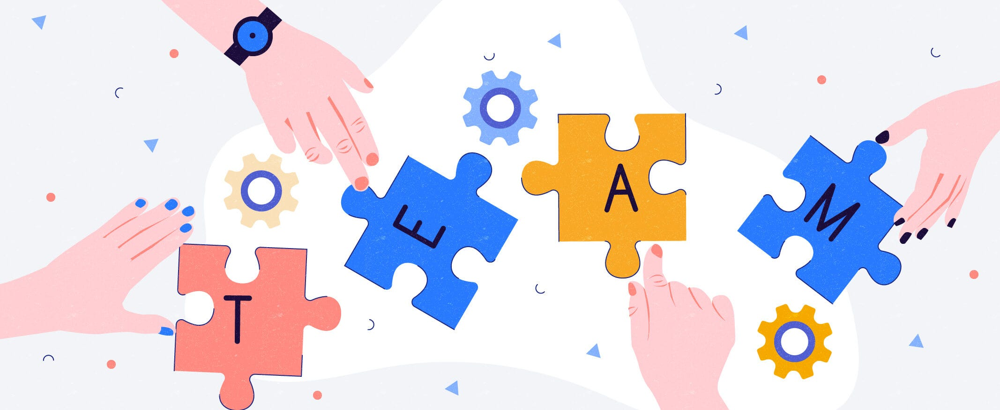

Become a Cross-functional talent


When I was working in 2009 in the technical team of a French company, a senior engineer was advising me to specialize in a specific IT domain because he saw that I was excited and interested to know about every projects that our department was involved in. Going from the Virtualization of the server infrastructure to the industrialization of the systems and applications deployment and support into which I was affected, my curiosity led me to talks with others people working on other projects. But another senior engineer advised me to not tie myself to a specific technical field because the world of technology is an ever-evolving world and being flexible, open, and curious about everything was a key criterion of success. This last advice of this last senior engineer is today very worth to me because cross-functional skill and talent are must-haves in our era of connected people and systems where change happens fastly and they flow to impact unimaginable fields of interest due to the network effect. In such kind of situation, being a cross-functional talent will help you see things that you would not see if you were an expert who is focused on a specific domain. In those days I would never think that I would be a day interested in Marketing, Cognitive science, System thinking, and even evolution theory. To say that this hard and long entrepreneurial journey that I went to until now helped me see think differently because I decided to stay curious and always trying to come up with ideas and testing the execution of these ideas for learning, improving, and getting more ideas from.
A cross-functional talent should have these three characteristics
low cost of position switching
in the connected economy that were are living now, companies and factories need talented people who could easily switch overnight from Business Development to HR or Marketing. We need people the fit a set of skills rather than people who fit a specific skill that could lead to expertise blindness which could make us completely not aware of the changes that happen to other areas that could affect our core area of focus.
Flexibility
being able to switch not only from skill to skill but from location to location, I mean geographically. The pandemic situation we are trying to leave behind reminded us clearly of the importance of not being bound to a specific working environment. Trying to come up with business ideas and solutions that could work in developing countries while being in an African country taught me how better we can see the macroscopic events into play if we just zoom out. But Zooming out is not about conferencing with Zoom but about distancing yourself from the problems you are working on but not in a magnitude that could disconnect you from the real problem to solve.
Curiosity.
Always learning is a mantra for being a cross-functional talent. No need to spend a lot of words saying that you should be a lifelong learner in order to be a better cross-functional talent
Become a cross-functional talent! that’s what I am trying to be.
PS: cross-functional talent are connectors like those people I described in this article below